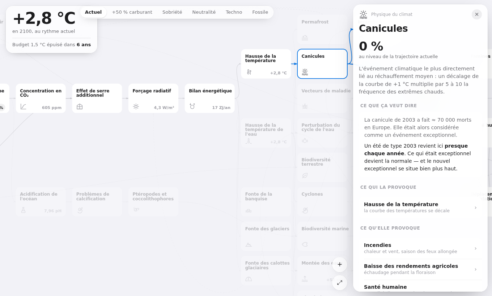
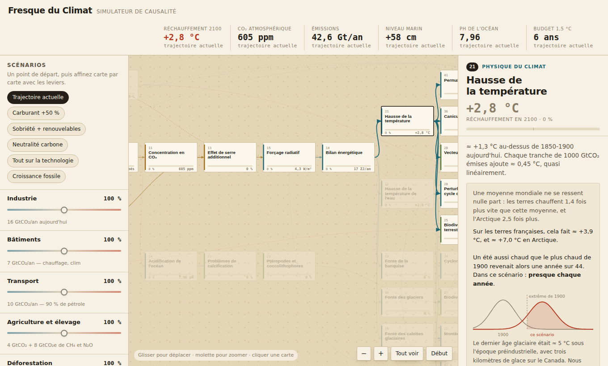

Les 42 cartes de l'atelier reliées par leurs liens de cause à effet — plus dix cartes ajoutées. On déplace une cause, et l'onde traverse la chaîne jusqu'aux conséquences humaines.

Édition épurée. Un seul chiffre, les réglages posés sur les cartes elles-mêmes, une fiche qui glisse. Pensée pour le geste.
Ouvrir →
Édition atelier. Six indicateurs, huit curseurs visibles d'un coup d'œil, numéros de cartes conservés pour suivre le jeu physique.
Ouvrir →Un noyau physique calibré sur le GIEC AR6 : le réchauffement suit le TCRE (0,45 °C par 1000 GtCO₂), la concentration vient de la fraction absorbée par les puits, le forçage de 5,35·ln(C/C₀). Trois rétroactions — permafrost, incendies, albédo — rendent le système implicite, résolu par point fixe. Au-delà de ce noyau, les cartes de conséquences portent un indice relatif propagé dans le graphe.
Les chiffres physiques sont des ordres de grandeur défendables. Les pourcentages sur les cartes de conséquences sont ordinaux : ils classent correctement les réactions les unes par rapport aux autres, ils ne se lisent pas comme des mesures. Le modèle est documenté en détail.
git clone <url-du-dépôt> cd fresque-climat open index.html # ou : python3 -m http.server
Aucune installation, aucun serveur nécessaire : chaque page est un fichier HTML autonome. Les sources d'édition sont dans src/, les pages servies sont régénérées par node tools/build.mjs.